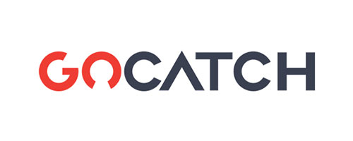
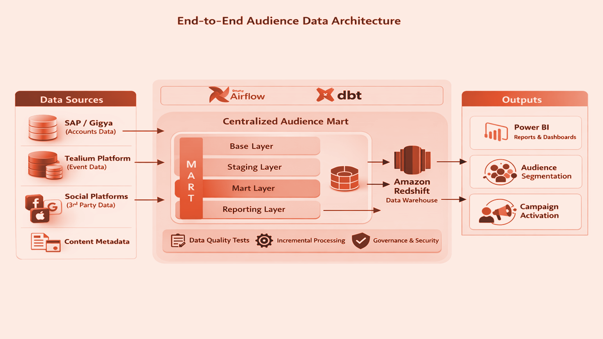
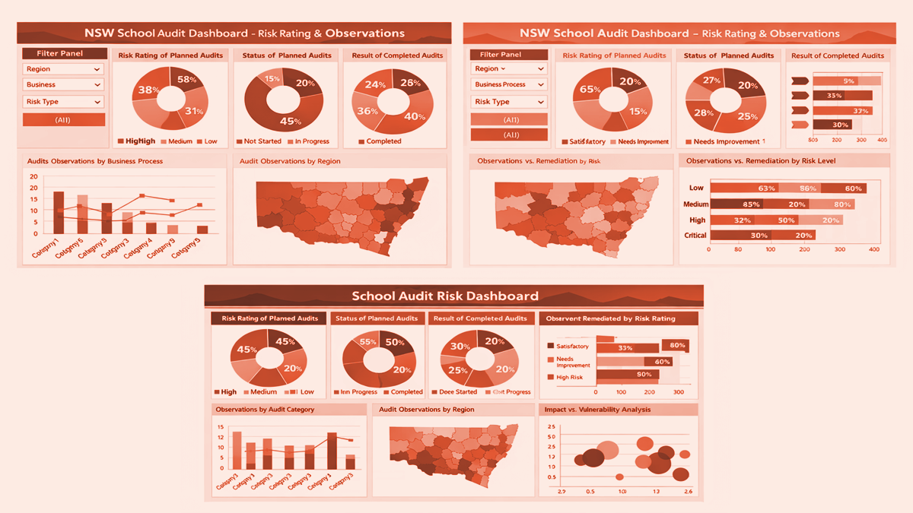
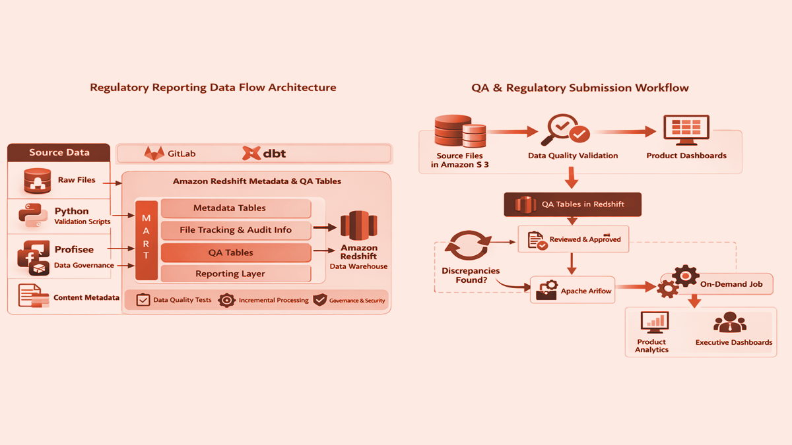
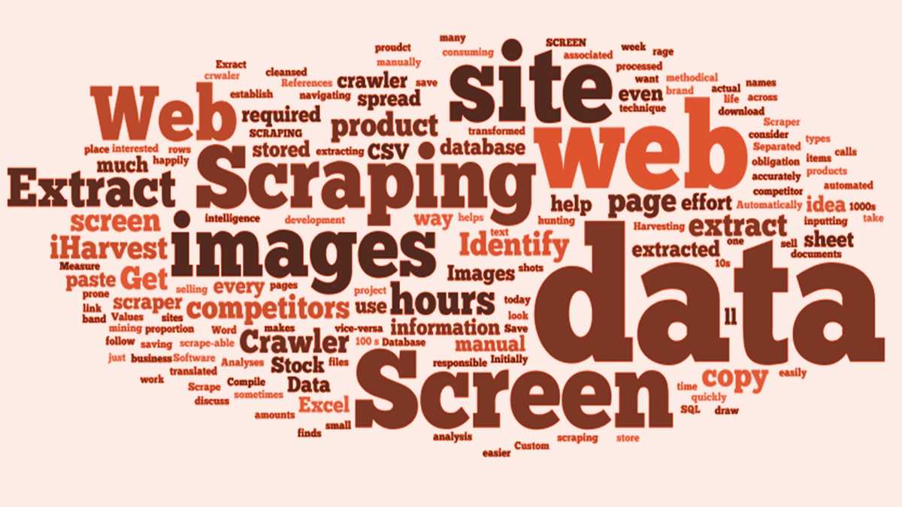

Hi, I'm Dayanand Balaboina
I help organisations build enterprise data platforms that are trusted, scalable, and ready for what's next. As a Principal Data and Analytics Consultant, I lead data engineering, platform architecture, and AI‑enabled innovation for government and enterprise clients. My work spans cloud data platforms, governance frameworks, and the teams that keep them running reliably. I'm focused on turning complex data challenges into clear, strategic outcomes.
About meI'm Dayanand Balaboina, a Principal Data and Analytics Consultant with nearly a decade of experience designing, delivering, and scaling enterprise data platforms across government, financial services, media, and consulting. I currently lead enterprise data engineering, platform architecture, and AI‑enabled innovation at NSW Treasury, setting the technical direction for teams building trusted, whole‑of‑government analytics platforms.
My background spans deep technical expertise in Snowflake, Databricks, Azure, and AWS, paired with a track record of leading high‑performing engineering teams, modernising legacy data estates, and translating complex business requirements into strategic data products. I'm particularly focused on bridging engineering, architecture, and AI‑driven innovation to help organisations treat data as a genuine strategic asset.
Organisations I've worked with to deliver data solutions

Career Achievements
Expertise
- Azure Data Factory
- Azure Databricks
- Snowflake
- AWS (Lambda, EC2, S3, RDS, API Gateway)
- Airflow
- dbt
- Power BI
- Tableau
- Python
- PySpark
- SQL / T-SQL
- Snowflake SQL
- GitHub / GitLab CI/CD
- Lakehouse & Medallion Architecture
- Data Vault & Dimensional Modelling
- Master Data Management
- Data Lineage & Quality Frameworks
- Metadata Management
- Microsoft AI Foundry
- Agentic AI Concepts
- Generative AI Use Cases
- AI-Driven Data Quality
- Prompt Engineering
- Technical Leadership
- Team Mentoring & Capability Uplift
- Stakeholder & Executive Communication
- Delivery Governance
Projects

Enterprise Data Platform & AI-Enabled Innovation
ADF, Databricks, Snowflake, Power BI, Microsoft AI Foundry

Audience Data Insights and Segmentation
dbt, Airflow, Python/PySpark, Redshift, Power BI

School Risk Score Algorithm (Audit Intelligence)
Oracle EBS, Python, Qlik Server, MySQL, Power BI

Regulatory Reporting and Data Analytics
Airflow, Python/PySpark, Amazon Redshift, SQL, Power BI
Predictive Analysis of College Graduates
Data from Dept of Education USA
SAT Scores
Basic EDA of SAT scores and data insights
Machine Learning on Housing Data
Regression and classification with the Ames Housing Data

Classification of Data Science Jobs
BeautifulSoup scraping of job listings on Indeed